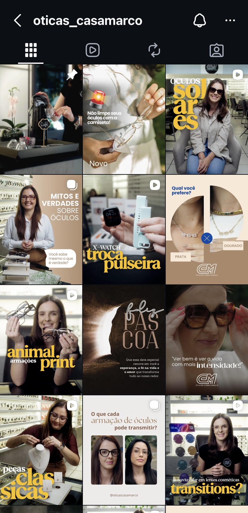
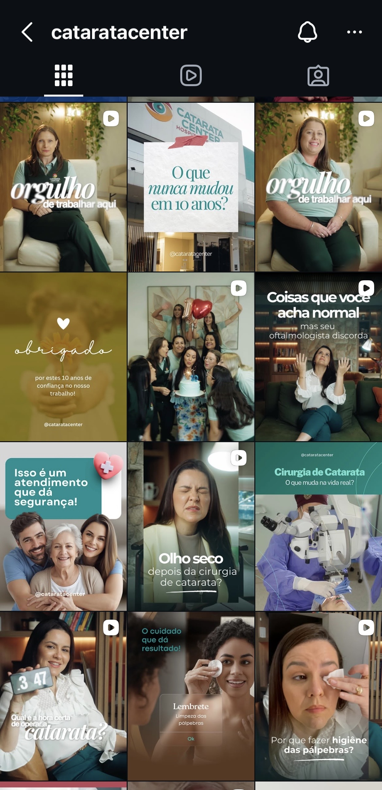
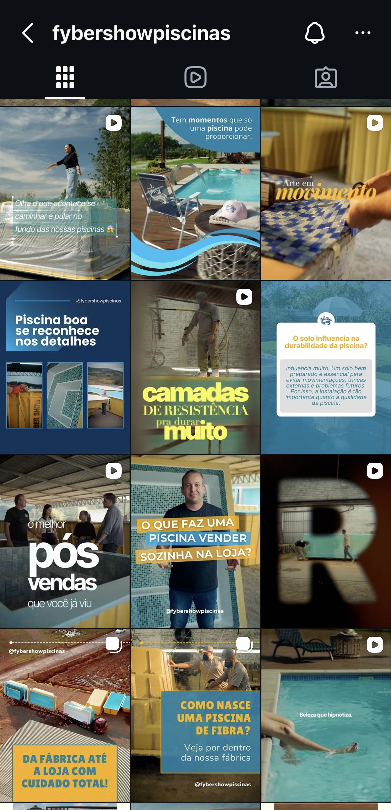
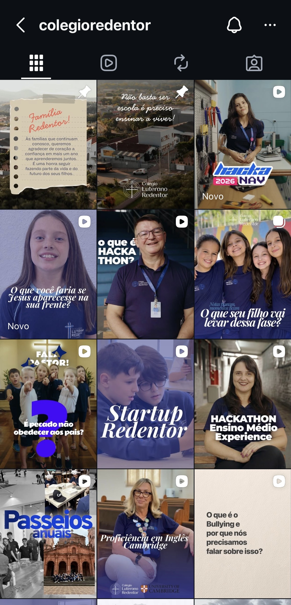

Quem somos
A Forster é um ateliê de conteúdo feito por quem acredita que o trabalho se adapta à filosofia de vida e não o contrário.
Samuel Forster · Direção, captação e edição
Silvana Forster · Planejamento, roteiro e estratégia de conteúdo
Estratégia, produção e constância.
Você grava uma vez por mês. A gente cuida de todo o resto.
Quem somos
Samuel Forster · Direção, captação e edição
Silvana Forster · Planejamento, roteiro e estratégia de conteúdo
Como trabalhamos
Planejamento
Antes de qualquer criação, a gente senta junto com você. Entendemos o seu momento, os temas que fazem sentido para o mês, o que está acontecendo no seu negócio. Só depois disso a gente define o que vai ser produzido, e quando.
Roteiro
Você não vai precisar improvisar nada na frente da câmera. A gente escreve o roteiro antes da sessão. Você recebe tudo com antecedência e aprova. Durante as gravações utilizamos teleprompter para você não ter que se preocupar em decorar nada.
Gravação
A gente vai até você com tudo que é necessário. Você só precisa aparecer.
Edição e entrega
Editamos cada vídeo e criamos cada post com o cuidado para que tenha a sua identidade visual e o seu tom de voz. Quando estiver pronto, você recebe um link para ver tudo, aprovar e baixar. Sem complicação.
Publicação
Com tudo aprovado, a gente cuida da publicação. Vídeos, posts fixos, legendas. Você fica livre para cuidar do seu negócio.
E começa de novo
Todo mês, com consistência. Quanto mais tempo trabalharmos juntos, mais natural fica produzirmos e melhor fica o conteúdo.
Como começamos
Antes de começar
Alinhamento de expectativas e assinatura do contrato.
Mês 1 · Diagnóstico Inicial
Antes de gravar qualquer coisa, a gente dedica o primeiro mês inteiro a entender o seu negócio, o seu público e o que faz sentido comunicar.
Mês 2 em diante · Execução
Com a estratégia pronta, o ciclo começa. E a partir daí a gente cuida de tudo.
Como é na prática
Alguns dos perfis que a gente cuida




Os planos
Plano 1
Para quem precisa começar a postar com regularidade.
O que está incluso
Plano 2
Para quem quer postar todo mês e ver o perfil virar referência.
O que está incluso
Plano 3
Para quem quer ir além do Instagram e ter um canal no YouTube que trabalhe por você.
Tudo do Estratégico, mais
Próximos passos
Se essa proposta é o que você busca, me chama no WhatsApp. Vai ser um prazer fazer esse conteúdo com você.